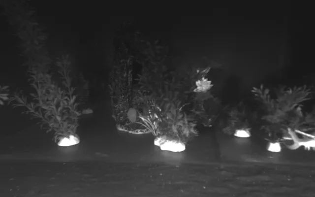
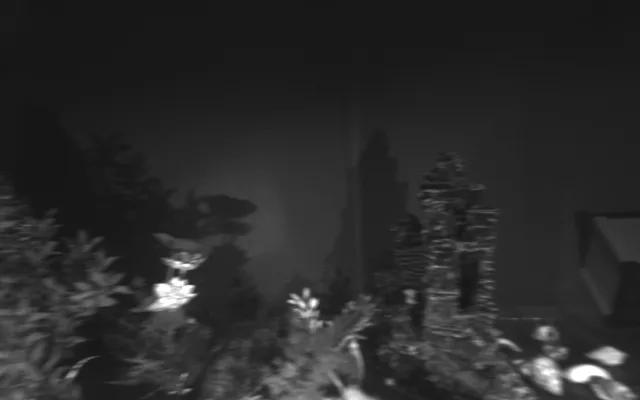
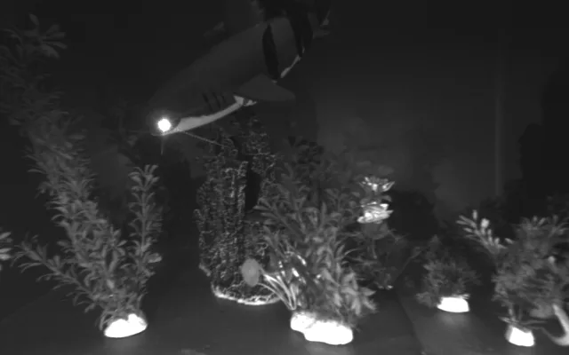
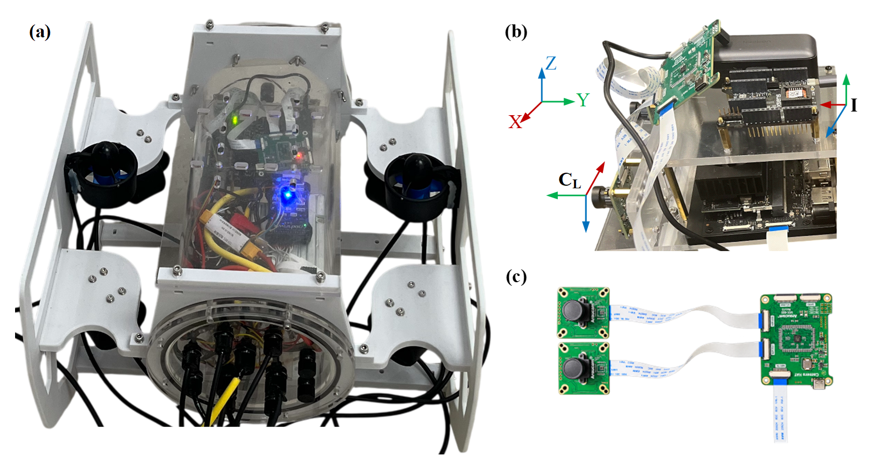
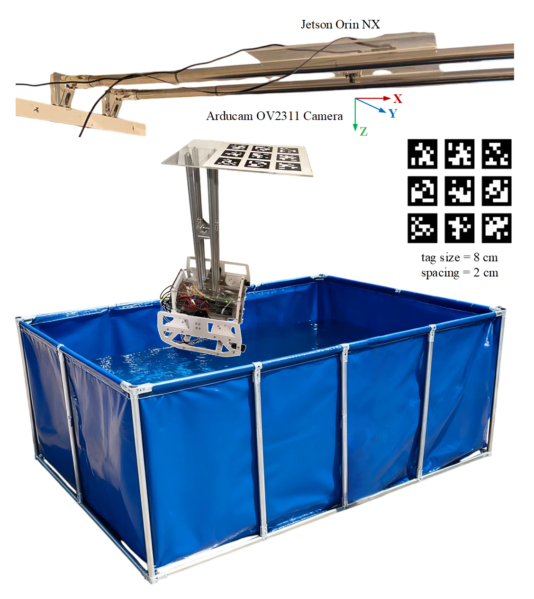

Arducam OV9281 stereo
Hardware synchronized · Global shutter · 1280 × 800 per eye · Nominal 20 Hz
Current calibrated baseline: 100.95282 mm. Native mono8 messages contain left/right images side by side at 2560 × 800.
UNIVERSITY OF YORK · UNDERWATER ROBOTICS
Underwater stereo for
image processing & visual SLAM.
64 tank recordings across changes in lighting, motion, texture and moving objects. Original imagery, stereo rectification, sequence descriptors and overhead-camera pose references.
RESEARCH PREVIEW Working title · New archive in preparation



ACQUISITION CONDITIONS
A reference condition, five single-factor designs and a combined condition. Groups describe acquisition intent; measured appearance and motion remain separate. No easy/hard ranking.
Acquired on 27 and 31 March 2026. Water appeared more turbid after several days; no turbidity measurement is available. Comparisons are stratified by date. Source directory names do not define additional parameter groups.
SEQUENCE CATALOGUE
Loading 64 sequences…
| Sample / sequence | Condition / date | Duration / pairs | Brightness | ATE / completeness | Details |
|---|
No matching sequences. Reset the filters to see all recordings.
Brightness is the full retained raw left-image mean on 0–255. ATE and completeness are current ORB-SLAM3 stereo results against the candidate left-camera reference: 56 first runs plus one fixed rerun for each of the original 8 exceptions. Missing ATE is not zero. Open a sequence for stereo samples, motion, texture, foreground and original time ranges.
SENSORS & SETUP
The robot carries an underwater stereo camera. An above-water camera observes an AprilTag board rigidly connected to the robot. Two Jetsons record the streams separately.

Hardware synchronized · Global shutter · 1280 × 800 per eye · Nominal 20 Hz
Current calibrated baseline: 100.95282 mm. Native mono8 messages contain left/right images side by side at 2560 × 800.
Global shutter · 1600 × 1300 · Nominal 20 Hz
The reference stream estimates the AprilTag board-centre pose. The board trajectory is transformed before comparison with the left camera.
All 64 cropped stereo bags contain /imu/data. IMU calibration, timing and inertial SLAM have not been validated in this processing pass. The current baseline does not use IMU.
POSE REFERENCE
The current solver uses a 3 × 3 tag36h11 board with 80 mm tags and 20 mm gaps, centred on tag 4; physical board dimensions remain to be confirmed. At least two tags are required per pose. No pose filling or temporal smoothing is applied.
Tworld,left = Tworld,board · Tboard,leftThe historical orb_combined transform is used after SVD rotation projection. Its historical fit sources are P008/P009. The camera is approximately 0.8 m below the board centre; this is not a full 6-DoF calibration. The transform has not been independently physically verified, so current ATE does not establish reference accuracy.

DOCUMENTATION
Original bags are preserved. Derived results are joined by stable sequence IDs, with original integer-nanosecond timestamps retained.
Check both recording ranges, then review the head and tail inside the common interval. Remove handling and entry/exit segments; retain intended interior degradation.
Split into 1280 × 800 eyes and rectify using the existing underwater calibration with alpha = 0. Keep raw appearance metrics separate from rectified imagery.
Estimate board-centre poses from overhead images, then transform them into the rectified left-camera frame using the candidate rigid transform. Save per-frame solver quality.
Run ORB-SLAM3 stereo and compare factor groups with same-day reference recordings. Retain missing evaluations as missing.
sequence/Pxxx/ calibration/ # camera & rectification images/ # left/right rectified PNGs pairs.csv # original header timestamps gt/board_center.tum gt/left_rectified_candidate.tum gt/frame_quality.csv metrics/ # raw appearance descriptors slam/ # first-run baseline outputs
Overview of current processed contents; the final public archive layout is not frozen. TUM rows use seconds, metres and quaternion qx qy qz qw. Metadata stores nanoseconds as strings to avoid floating-point precision loss.
Both devices use the same crop interval. No timestamp reset, cross-device offset fitting or drift correction is applied; a shared clock is the current processing assumption.
Texture uses INTER_AREA resizing, Shi–Tomasi qualityLevel = 0.01, minDistance = 4, blockSize = 3, and minimum eigenvalue ≥0.0001. Appearance sampling covers 14,876 stereo pairs / 29,752 original images. Website WebP derivatives are for display only and are never used to recompute descriptors.
Rectified per-eye intrinsics: fx = fy = 1347.522482188155, cx = 493.020038604736, cy = 549.608562469482. Full native and rectified camera parameters are in the calibration JSON.
BASELINE & COMPARISONS
ORB-SLAM3 stereo, without IMU; SE(3) alignment at fixed scale; association tolerance strictly below 40 ms; zero time offset. ATE covers valid matched trajectory only and must be read alongside completeness.
Completeness C = Nv / NI, where Nv counts the longest continuous valid matched segment and NI is the input-pair count. It is not the fraction of all saved poses. P021 has one valid pose: ATE is unavailable, while completeness remains 0.136%.
Fixed empty-map export after no initialization and the optional TUM exporter crash after switching to an empty active map. Original images, calibration, GT, parameters and the same tracking library were retained. Each target received one fixed rerun, without best-result selection. P006/P039/P040 still fail to initialize: completeness is genuinely 0 and ATE stays unavailable.
The original SO3 NaN aborts in P032/P045 did not recur in this rerun. Historical errors and original logs remain; a permanent numerical fix is not claimed.
Download repair outcomes and run IDs ↓| ID | Current outcome | ATE RMSE | Completeness |
|---|
BEFORE & AFTER REPAIR · BY DATE
Before repair is the preserved first-run snapshot. After repair is the v008 selection: 56 unchanged first runs and one fixed rerun for each of 8 original exceptions. Both versions are shown together by default.
Loading dated results…
| Sequence / condition | Date | Total n | ATE RMSE (cm) | Valid ATE n | Mean completeness (%) | Valid completeness n |
|---|
ATE averages only defined trajectories; missing poses are never zero error. Completeness includes observed no-initialization zeros, while unevaluated first-run records stay missing. Valid n can differ between versions, so a change in the available sample set is not itself an algorithm improvement or deterioration.
Original v006/v007 assignments and covariate limits are held fixed. Each outcome uses pairs with that outcome available on both sides; its reference mean uses those same pairs. Differences are factor minus reference: positive ATE or negative completeness indicates worse results for the factor group.
| Factor / date | Matched / target n | ATE factor / reference (cm) | Valid ATE pairs | ATE difference (cm) | Completeness factor / reference (%) | Valid completeness pairs | Completeness difference (pp) |
|---|
No single-factor control comparison for this selection. Sequence2 is the reference; sequence8 combines conditions and is described separately.
Only 3/8 non-uniform-light, 4/8 low-texture and 7/8 moving-object recordings meet the primary matching limits; valid ATE pairs can be fewer. These are same-date observational comparisons with measured covariates, against the candidate left-camera reference. Stricter sensitivity results remain in the research records.
The original 64-recording snapshot has 55 numeric ATE and 56 completeness values; the v008 selection has 60 and 64 respectively. The former low-light completeness mean of 100% covers only 4 recordings; the current 59.65% covers all 8, including 3 uninitialized recordings. P021 retains missing ATE and very low completeness. Original NaN aborts in P032/P045 did not recur in the fixed rerun; a permanent fix is not claimed.
Download preserved 64-sequence first-run outcomes| Acquisition group | Matched / group | ATE factor / reference | Completeness factor / reference |
|---|
Current v008 outcomes with all v006/v007 matches held fixed. Stratify by date: motion matches brightness; texture/moving objects also match board speed and rotation. Low light matches motion; non-uniform light additionally matches brightness. Matching never uses SLAM outcomes and is not repeated for missing evaluations. Texture has only 3 valid ATE pairs and 4 completeness pairs. These are matched observational comparisons, not strict causal effects; the moving-object ATE direction differs between dates.
The 12 sequence8 recordings have mean ATE 3.48 cm and completeness 38.58%. The 31 March subset has lower ATE but only 20.90% completeness, versus 56.26% on 27 March. Lower ATE alone does not imply better performance.
P006 / P039 / P040 — no initialization / empty-map export error.
P032 / P045 — numerical abort.
P007 / P053 / P054 — canonical trajectory saved; secondary export error; evaluation missing.
These are algorithm/export states, not proof of corrupted recordings. All 64 remain in the collection. The original run had 55 numeric ATE values; the current fixed-rerun set has 60 numeric ATE and 64 completeness values. Averages must report valid sample counts. P008/P009 were historical transform-fit sources and are not independent extrinsic-validation data.
DATA ACCESS
This is the research preview of the new 64-recording collection. Sequence metadata and parameters are available below. Raw bags and full processed archives are not publicly distributed on this page. The new release name, licence, DOI and citation will be added when the archive is finalized.